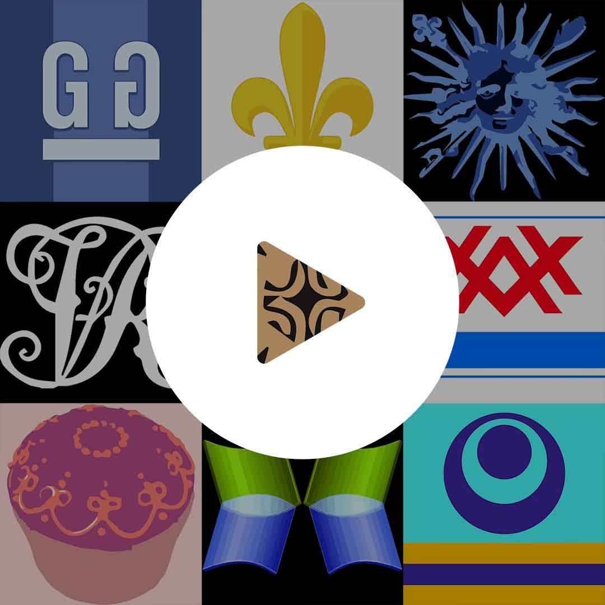
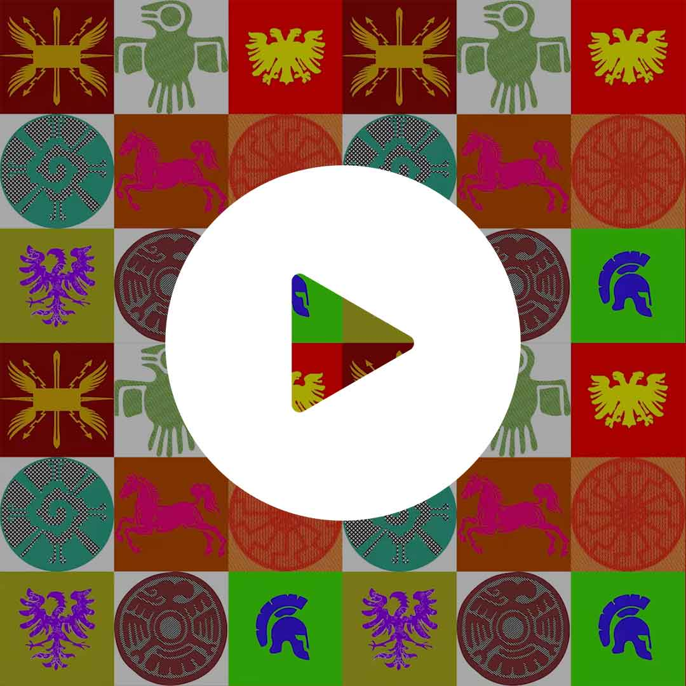

<!-- Copyright (c) 2022 8th Wall, Inc. -->
<!-- body.html is optional; elements will be added to your html body after app.js is loaded. -->

<a-scene
  xrextras-gesture-detector
  landing-page
  xrextras-loading
  xrextras-runtime-error
  renderer="colorManagement:true; webgl2: true;"
  xrweb="disableWorldTracking: true">
  <a-assets>
    
    
    
    
    <video
      id="nine-square"
      autoplay
      muted
      crossorigin="anonymous"
      loop="true"
      src="assets/augments/9square.mp4"></video>
    <video
      id="cupcake"
      autoplay
      muted
      crossorigin="anonymous"
      loop="true"
      src="assets/augments/cupcake.mp4"></video>
    <video
      id="eat-fb"
      autoplay
      muted
      crossorigin="anonymous"
      loop="true"
      src="assets/augments/eat-fb.mp4"></video>
    <video
      id="miniature-horse"
      autoplay
      muted
      crossorigin="anonymous"
      loop="true"
      src="assets/augments/miniature-horse.mp4"></video>
  </a-assets>

  <a-camera position="0 4 10" raycaster="objects: .cantap" cursor="fuse: false; rayOrigin: mouse;">
  </a-camera>

  <a-light type="directional" intensity="0.5" position="1 1 1"></a-light>

  <a-light type="ambient" intensity="0.7"></a-light>

  <xrextras-named-image-target name="paint-effects-bamboo">
    <xrextras-target-video-fade
      video="#miniature-horse"
      height="1"
      width="1.35"></xrextras-target-video-fade>
  </xrextras-named-image-target>

  <xrextras-named-image-target name="paint-effects-bamboo-invert">
    <xrextras-target-video-fade
      video="#eat-fb"
      height="1"
      width="1.35"></xrextras-target-video-fade>
  </xrextras-named-image-target>

  <xrextras-named-image-target name="qr">
    <xrextras-target-video-fade
      video="#cupcake"
      height="1"
      width="1.35"></xrextras-target-video-fade>
  </xrextras-named-image-target>

  <xrextras-named-image-target name="linear-leather">
    <xrextras-target-video-fade
      video="#nine-square"
      height="1"
      width="1.35"></xrextras-target-video-fade>
  </xrextras-named-image-target>
</a-scene>
